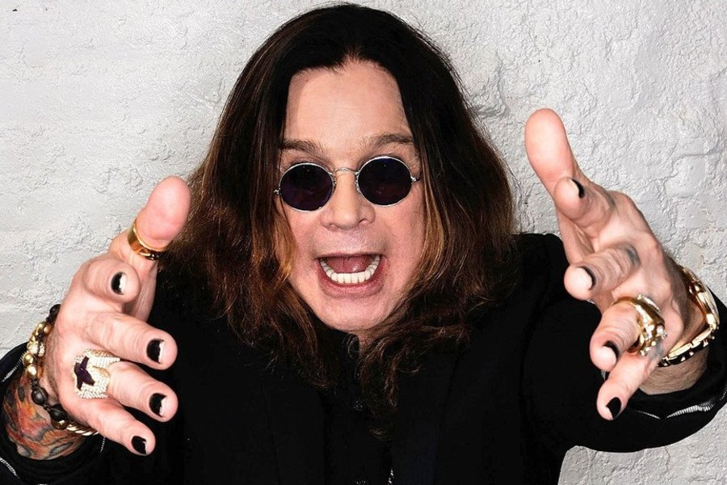

У Оззи Осборна подозревают пневмонию
Рок-музыкант Оззи Осборн попал в отделение интенсивной терапии из-за угрозы воспаления легких.
ПодробнееБританский рок-певец, музыкант, один из основателей и участник группы Black Sabbath, оказавшей значительное влияние на появление таких музыкальных стилей, как хард-рок и хеви-метал. Успешность его карьеры и популярность принесли ему неофициальный титул «Крёстный отец хэви-метала».
Род деятельности: музыкант, певец
Дата рождения: 03 декабря 1948 (70лет)
Место рождения: Бирмингем, Великобритания
Жанры: хард-рок, хэви-метал, дум-метал
Рок-музыкант Оззи Осборн попал в отделение интенсивной терапии из-за угрозы воспаления легких.
ПодробнееУ артиста возникли осложнения после перенесенного гриппа. Из-за болезни ему пришлось отменить ряд концертов.
Подробнее